*** PET-PC ***
READY.
A Commodore PET–style desk terminal on an ESP32-C6.
A clock, the weather, your Home Assistant lights — and two keys that do whatever you tell them to.
It boots into BASIC, loads the weather from tape, and fills the screen with 10 PRINT when you leave it alone.
The real firmware, rendered on a desktop: boot, tape, block clock, screens, BASIC, screensaver.
What it does
Three keys, one OLED
A 128×64 screen and three mechanical key switches on a Waveshare ESP32-C6-Zero. No hub, no cloud, no YAML — it fetches everything itself.
Seven screens
PETSCII block clock, a classic clock, weather, a BASIC READY. prompt, a live program LISTing, Home Assistant, system status.
Keys you configure
Each outer key has a press and a hold action: call a webhook, jump to a screen, toggle a light, run a scene, cycle a selector.
Home Assistant, optional
Show sensors and switch lights from the keys, over HA's REST API with a long-lived token — nothing to install on the HA side.
Retro all the way down
BASIC boot banner, PRESS PLAY ON TAPE around every weather fetch, CRT wipes, a power-off collapse — and a web page with scanlines.
Kind to the OLED
Modest brightness, a night schedule that switches the panel off, burn-in pixel shift and a screensaver keep the panel young.
Screens
The centre key steps through them; pick which ones — and the one it starts on — from the web page.
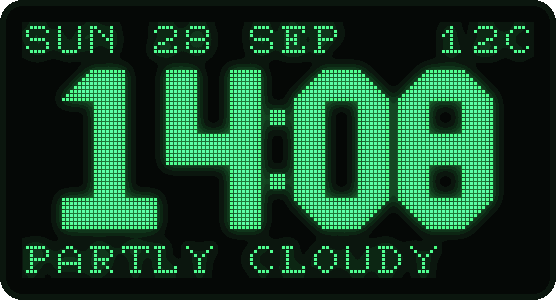
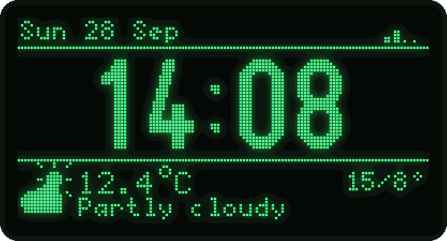
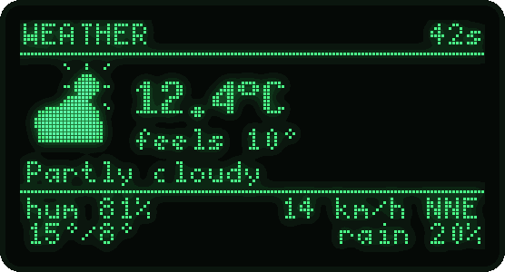
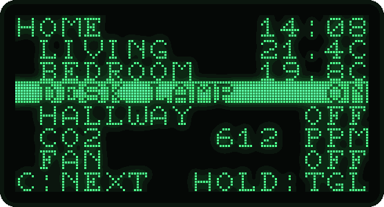
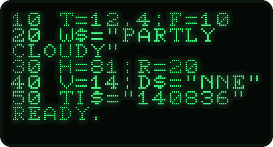
TI$ ticks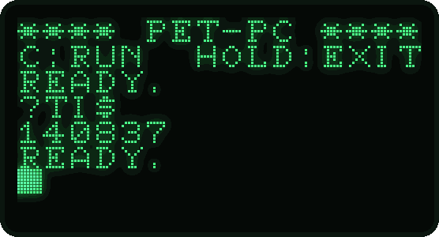
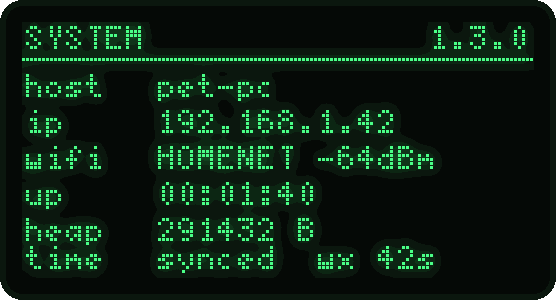
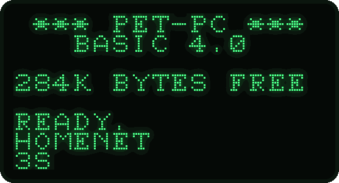
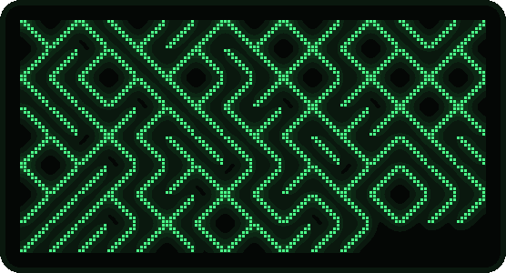
10 PRINT CHR$(205.5+RND(1));Weather, loaded from tape
Every refresh plays LOAD "WEATHER" → PRESS PLAY ON TAPE #1 → SEARCHING → LOADING,
does the real fetch at that step, then RUNs it. Screen changes get a scan-line wipe or a vertical-hold roll, and at night the
picture collapses to a line and a dot like a CRT switching off. All of it can be turned off.
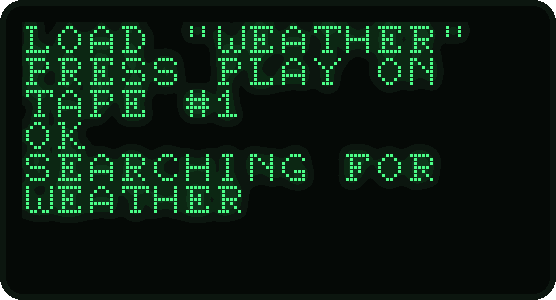
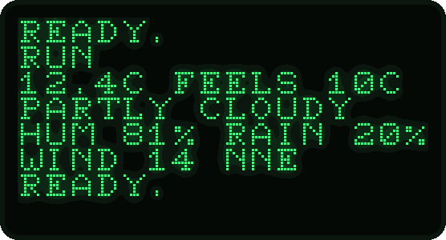
The web page
Everything is set from http://pet-pc.local/ — no app, no reflashing. The page lives in the firmware, so it works
over the device's own hotspot too. Every setting explains itself; Save waits until the settings have loaded, sends only what changed,
and flags a bad value before it is sent — ?SYNTAX ERROR.
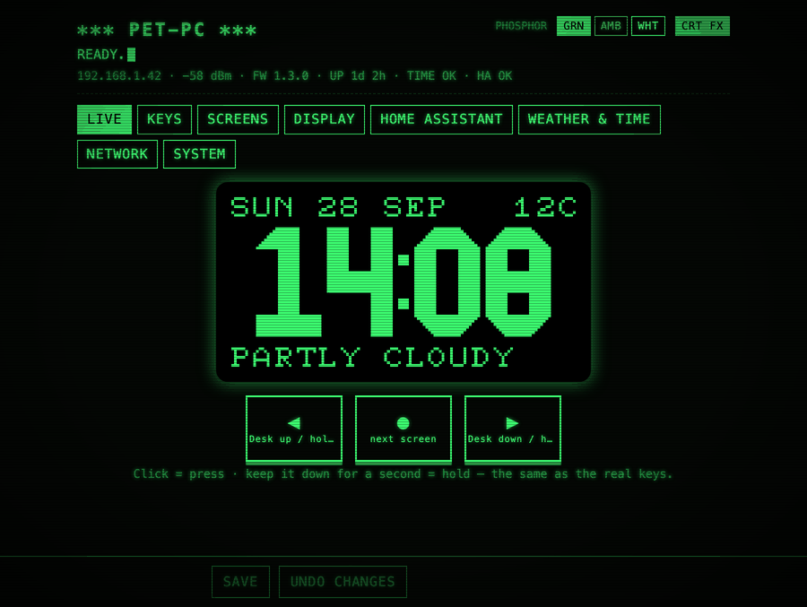
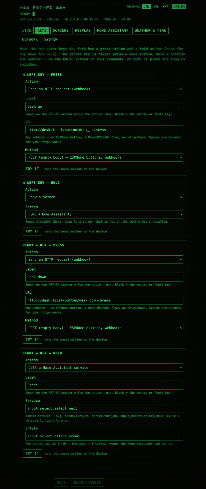
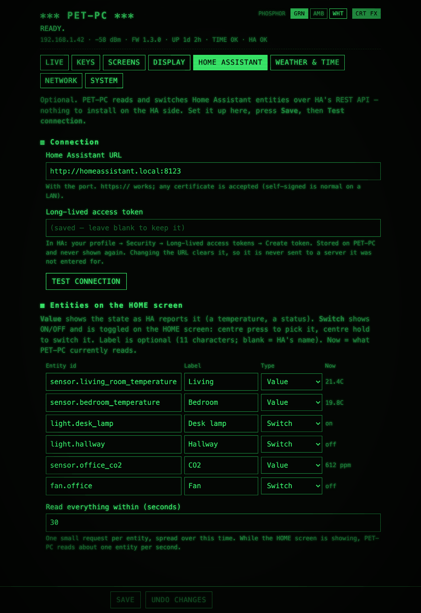
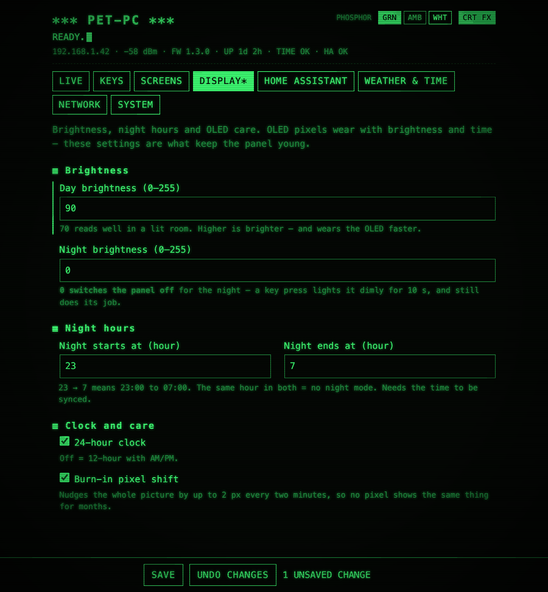
Hardware
| Part | Notes |
|---|---|
| Waveshare ESP32-C6-Zero | ESP32-C6, 4 MB flash, native USB-C for flashing and serial |
| SSD1306 128×64 I²C OLED (0.96″) | the common 4-pin module, address 0x3C, powered from 3.3 V |
| 3 × MX-style key switches | clicky or tactile — the switch is the only click there is |
| A PET-style case | 3D-printable — see below — or any box with three 14 × 14 mm cutouts |
No resistors, diodes or matrix: each key goes from a GPIO to ground, and the OLED sits on four consecutive header pins — one straight ribbon. OLED on GP0/GP1, keys on GP18/GP19/GP20. Full pin map and assembly notes in WIRING.md.
3D-printable case
The PET-style case — shell, key plate and screen bezel — is being prepared for publishing. The models will be linked here.
Quick start
You need PlatformIO Core 6.2 or newer and a USB-C data cable.
git clone https://github.com/Krasnov777/esp32-pet-pc.git
cd esp32-pet-pc/firmware
pio run -t upload # builds and flashes over USB-C- On first boot PET-PC opens a hotspot, PET-PC-XXXX. Join it and browse to http://192.168.4.1/.
- Network tab: your WiFi (2.4 GHz). Save — PET-PC restarts and joins it.
- Browse to http://pet-pc.local/: pick your time zone and location, set the keys. Done.
Later updates go over WiFi: pio run -e ota -t upload --upload-port <device-ip>. Settings survive every update.
Home Assistant
In HA, create a long-lived access token (profile → Security). On PET-PC's page, enter the HA URL, the token and up to six
entities — each a Value (a temperature, a status) or a Switch (ON/OFF, toggled from the centre key). The outer keys can also
toggle any entity or call any service: scene.turn_on, script.turn_on, input_select.select_next.
The token is write-only and never leaves for a server it was not entered for.